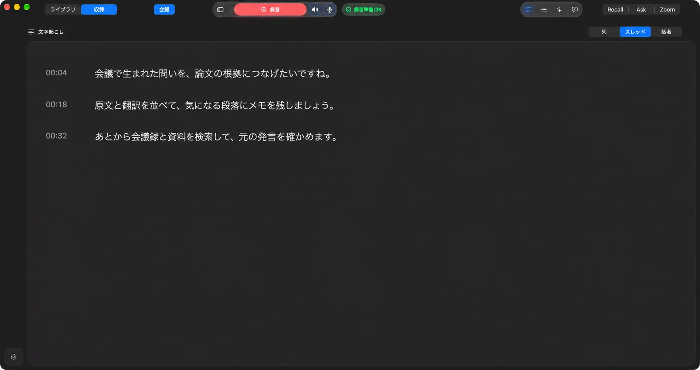
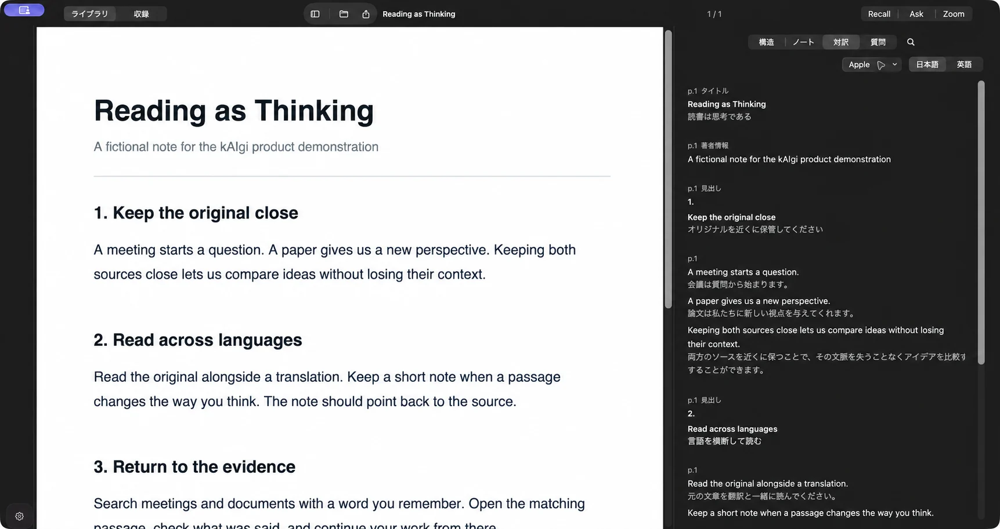
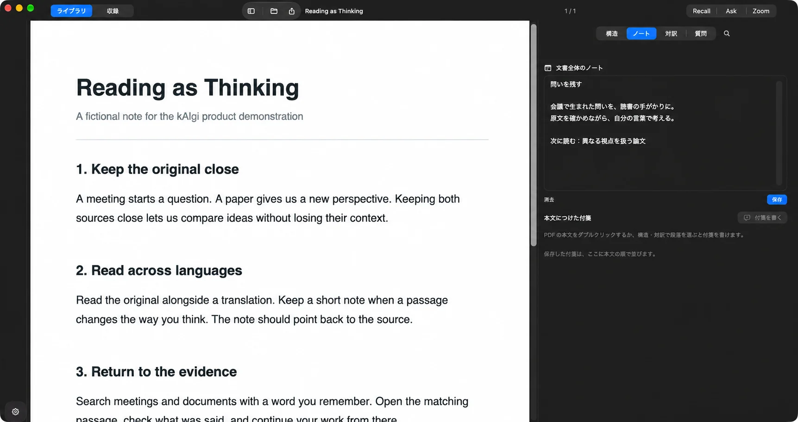

会議中は、
聞くことに集中。Be in the
conversation.
マイクとMacの音声を録音。話した内容を、時刻つきの文字で振り返れます。Record your microphone and Mac audio. Revisit what was said in a timestamped transcript.
00:04
会議で生まれた問いを、論文の根拠につなげたいですね。
録音・文字起こし・対訳・ノート。
調べる仕事を、ひとつのMacアプリで。Recording, transcripts, translation, and notes.
Your research work. One Mac app.
macOS 15+ · Apple Silicon · 無料Free

マイクとMacの音声を録音。話した内容を、時刻つきの文字で振り返れます。Record your microphone and Mac audio. Revisit what was said in a timestamped transcript.
会議で生まれた問いを、論文の根拠につなげたいですね。

英語の資料も、翻訳を隣に。気になる言葉は、原文で確かめられます。Read an English source with its translation beside it. Check the words against the original.
A meeting starts as a question.
会議は質問から始まります。

読みながら浮かんだ問いを、原文の隣のノートへ。Keep a question that comes to mind in a note beside the original.
問いを残す
会議で生まれた問いを、読書の手がかりに。
原文を確かめながら、自分の言葉で考える。
録音・文字起こし・翻訳は、端末内で処理。Recording, transcription, and translation happen on your Mac.
データの扱いを読むHow data is handledCodexやClaude Codeへ、必要な根拠を。Bring the source evidence to Codex or Claude Code.kaigi context
macOS 15+ · Apple Silicon · 無料Free
macOS 15以降を搭載したApple Silicon Macに対応しています。Requires an Apple Silicon Mac running macOS 15 or later.
Ask・資料内質問は実験的機能です。設定で検証済みLocal LLMを準備できます。未準備の場合、対応するmacOS 26以降の環境ではAppleのオンデバイスモデルを利用します。モデルが使えない場合や根拠が不足する場合は、根拠候補を表示します。Ask and source Questions are experimental. Prepare a verified Local LLM in Settings, or use Apple’s on-device model on supported macOS 26 systems. When a model or sufficient evidence is unavailable, inspectable source candidates are shown.
録音・文字起こし・翻訳・Askの回答処理はMac内で行います。Askの会話は保存しません。AI Researchを有効にすると、簡易マスキングした検索語をDuckDuckGoとWikipediaへ送ります。Recording, transcription, translation, and Ask answers are processed on your Mac. Ask conversations are not saved. If enabled, AI Research sends lightly masked search queries to DuckDuckGo and Wikipedia.
接続フォルダの一覧は本文を保存せず、検索時に原文と接続権限を確認します。CLIで取得した内容を外部エージェントへ渡す場合、送信先は利用するツールの設定に従います。The connected-folder catalog keeps no body copy; search checks each original source and its access authority. Content passed through the CLI to an external agent follows that tool’s transmission settings.
詳しいプライバシーポリシーRead the full privacy policy資料はLibraryから開きます。PDF・Markdown・HTML・テキストをDocument Workbenchで扱い、接続フォルダの一覧更新中もすぐに開くことができます。Open sources from Library. PDF, Markdown, HTML, and text share the Document Workbench; connected files can be opened while the catalog refreshes.